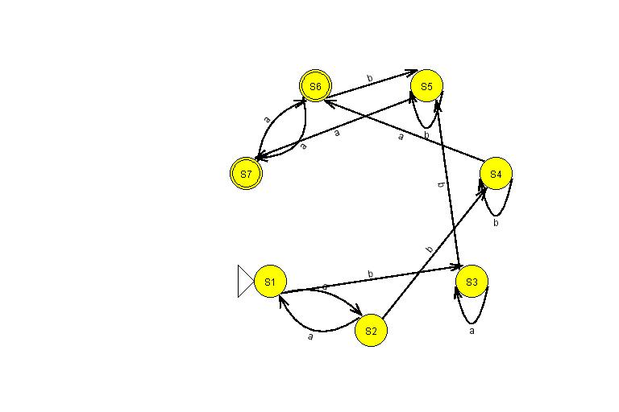
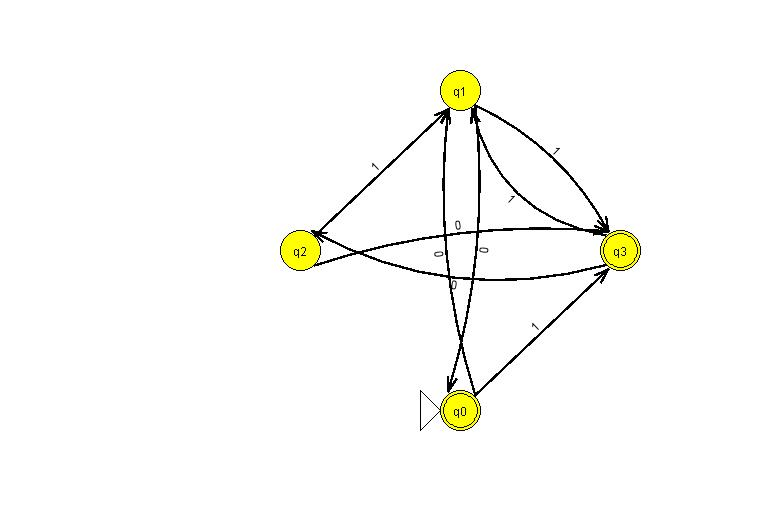

Type:AutomataFD
Alfabeto: [b, a]
Estados: [t1, t2, t3, t5, [t4,t6]]
Estado inicial: t1
Estados finales: [t5, [t4,t6]]
| _ | b | a |
|---|---|---|
| t1 | [t2] | [t3] |
| t2 | [[t4,t6]] | |
| t3 | [t5] | |
| t5 | ||
| [t4,t6] | [[t4,t6]] |
Entrada
Pasos-Tabla de minimizacion
| t2 | X | ||||
|---|---|---|---|---|---|
| t3 | X | X | |||
| t4 | X | X | X | ||
| t5 | X | X | X | X | |
| t6 | X | X | X | + | X |
| t1 | t2 | t3 | t4 | t5 |
Resultado del algoritmo de minimizacion
